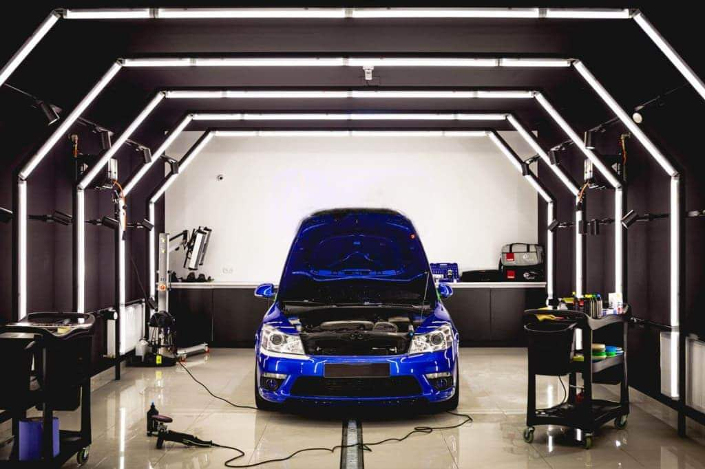

О компании»
VOLT Detailing открылся в 2018 году с одного бокса и двух мастеров, которые устали от «мойки за 15 минут» и хотели делать уход за автомобилем по-настоящему. Первыми клиентами стали друзья и знакомые — приезжали за полировкой и химчисткой, оставались за честность и результат.
За несколько лет студия выросла: появилось профессиональное оборудование (пароочистители, полировальные машинки, инфракрасные сушки), сертифицированные материалы и команда мастеров, которые проходят обучение у производителей составов. Сегодня VOLT — это студия полного цикла: от бережной мойки до керамики и оклейки защитной плёнкой.
Но главное не изменилось: мы по-прежнему относимся к каждой машине так, будто она наша собственная.
Возвращать автомобилям вид нового и защищать их на годы вперёд — без спешки, компромиссов и «химии», о которой потом жалеешь.
Мы верим, что детейлинг — это не роскошь, а способ продлить жизнь автомобилю и получать удовольствие от каждой поездки.
-
Честная диагностика. Сначала осматриваем автомобиль и говорим, что реально нужно, а что можно отложить. Не навязываем лишние услуги.
-
Только проверенные материалы. Работаем с сертифицированными составами и плёнками от производителей, а не с «тем, что дешевле».
-
Технология важнее скорости. Соблюдаем время подготовки, сушки и полимеризации покрытий. Если нужно 3 дня — значит, 3 дня.
-
Прозрачность. Фиксируем состояние автомобиля до и после, согласовываем объём работ и стоимость заранее. Без сюрпризов в счёте.
-
Ответственность за результат. Даём гарантию на выполненные работы и остаёмся на связи после выдачи автомобиля.
-
Опыт с 2018 года — сотни автомобилей, от повседневных до премиальных.
-
Полный цикл услуг — мойка, химчистка, полировка, керамика и оклейка в одном месте.
-
Сертифицированные мастера — регулярно проходят обучение у производителей материалов.
-
Профессиональное оборудование — пароочистка, ИК-сушка, полировальные машинки, контроль освещения для поиска дефектов ЛКП.
-
Гарантия на работы — от 6 месяцев на полировку и до 3 лет на керамические покрытия.
-
Удобная запись — онлайн, по телефону или через мессенджеры; напомним о визите.
-
Комфорт — зона ожидания с Wi-Fi и кофе, возможность наблюдать за процессом.
-
Скидка до 21.12.26 при онлайн-записи.
